IES Matrix sine wave dimmer racks and a bit of flicker-free stop-motion filmmaking
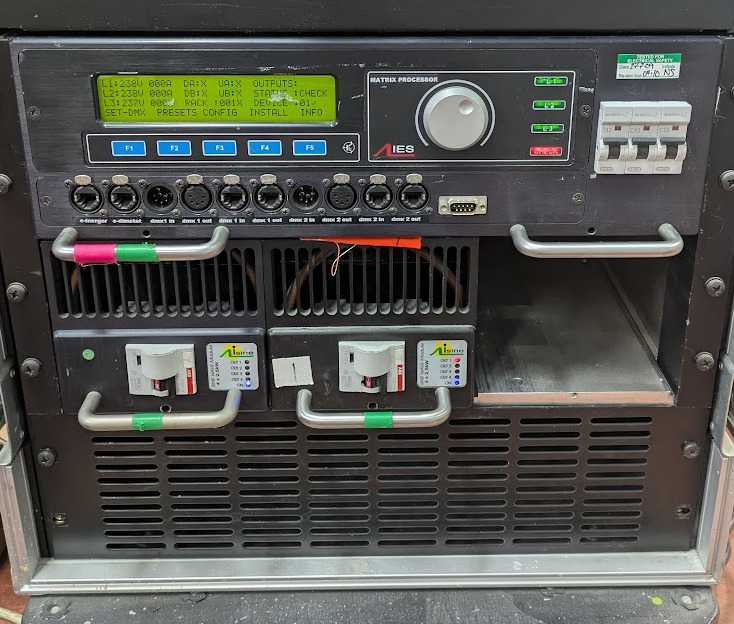
Background
The mini racks contain 3x 4-channel 2.5 kW isine modules for dimming lighting fixtures for theatre and film.
Rather than simple, traditional leading edge or trailing edge phase-cut dimmers, these sine-wave dimmers maintain the shape of the AC mains but modify the amplitude.
The individual channels can even be combined to operate together for larger loads.
Unfortunately, they're getting on a bit and faults are now common. This takes the form of a red light on front of the dimmer module that usually appears a few seconds after power is applied.
This is paired with a short circuit error code on the processor module.
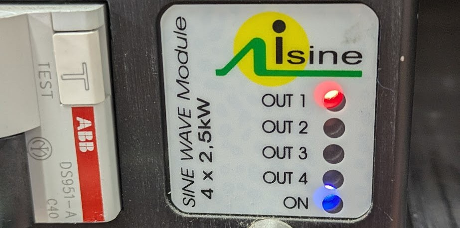
There can be a rhythmic ticking noise that sounds similar to a relay:
History
On the 26th of May 2004, ETC purchased IES.
Since then, they've released Matrix MkII (2006) which offers 6 channel 3kW sine modules.
They are 4U tall, 44mm taller than the first generation. They are 98% efficient, up from 97%.
MkII can also run in TL mode which emulates a trailing or leading edge SCR dimmer. Useful for LED fixtures with phase decoding drivers.
However, we're looking at the original Matrix Mk1 dimmers from IES, pre-acquisition.
ETC technicians who have repaired these modules previously have remarked about how it's usually the same component that fails. They didn't say which, but it isn't much of a mystery as they sometimes fail spectacularly.
ETC have now refused to provide continuing support for this legacy product, at a time where failures are beginning to become more and more frequent.
With the move to LED ramping up, it would be silly to continue adding to the collection of ~50 new ETC Sensor3 racks.
Teardown
Warning: This is not a repair guide. This equipment operates directly from hazardous mains voltages which can cause serious injury or death. This system was examined out of technical curiosity around interesting engineering and failure analysis.
Remove the locking bolt from the front panel of the 4-channel module and pull the module out of the rack.
Looking at the front of the module, the left side panel needs to be removed entirely for access to connectors (remove all screws on this side).
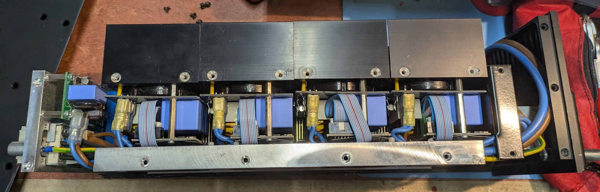
Looking at the controller PCB (bottom of dimmer module), find the faulty channel number on the silk screen.
Remove two screws on right side panel for only the faulty channel's heat sink. That channel module is now mechanically free but needs unplugging.
Remove the ribbon cable from the channel, some have metal retaining clips which have to be removed first.
Unplug the neutral, output and phase faston terminals. Needle nose pliers help with this step. Check if the connectors were making a tight fit by noting the force used to unplug them.
They often come loose and in many cases, the plastic becomes brown and brittle. These crimps must be replaced. Crimps that are loose but not brittle and burnt can be squeezed to tighten the connection.
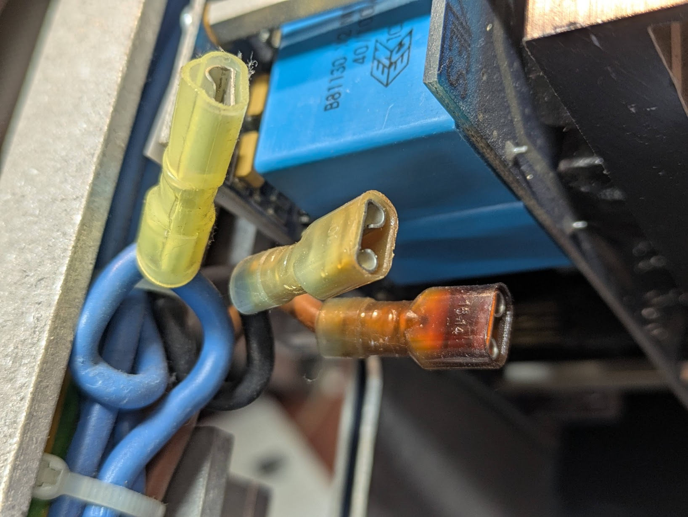
The failed component can now be identified on the channel module.
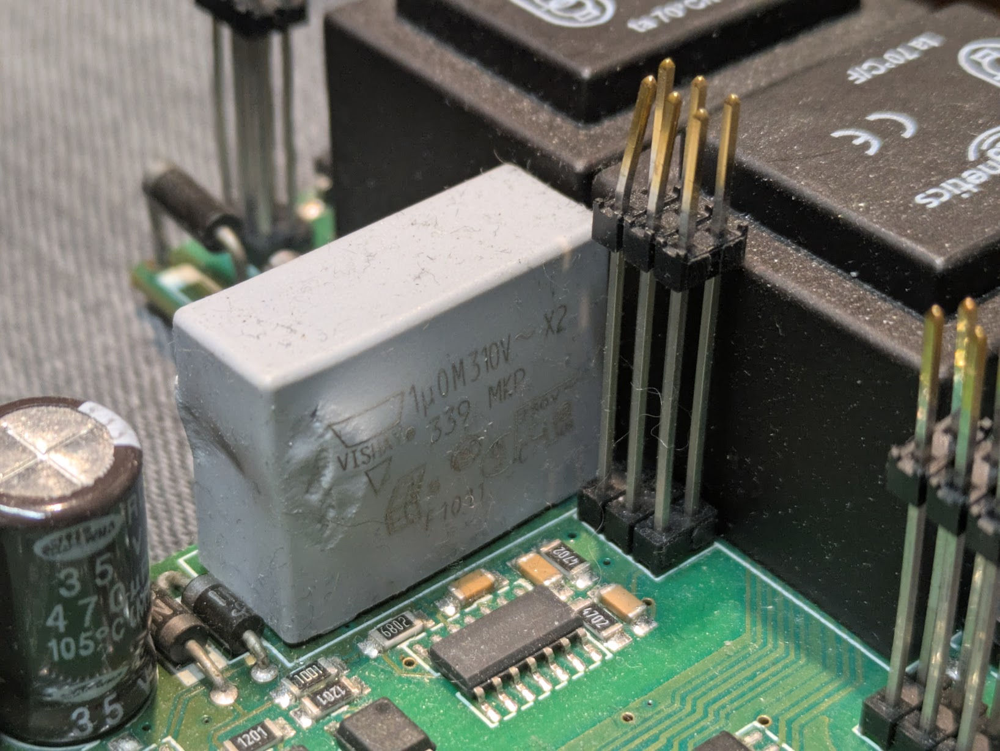
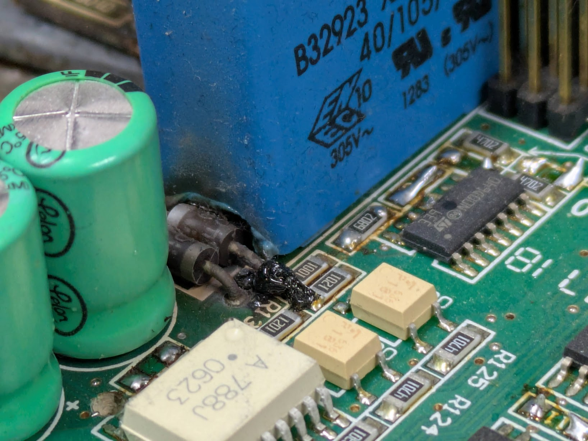
A variety of model capacitors have been used on these racks. Here is a sample of less than half of the caps I have changed.
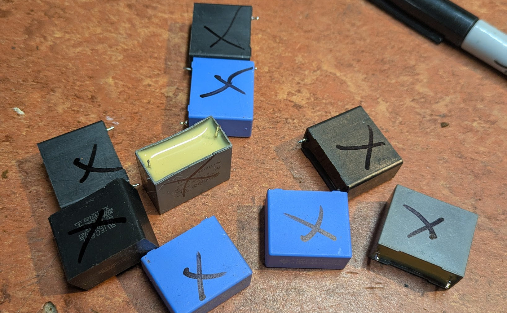
An example of an original capacitor is B32923 X2 MKP/SH by TDK.
About half the time, changing the capacitor is sufficient.
Other times, 4 diodes have overheated and sometimes caused significant PCB damage.
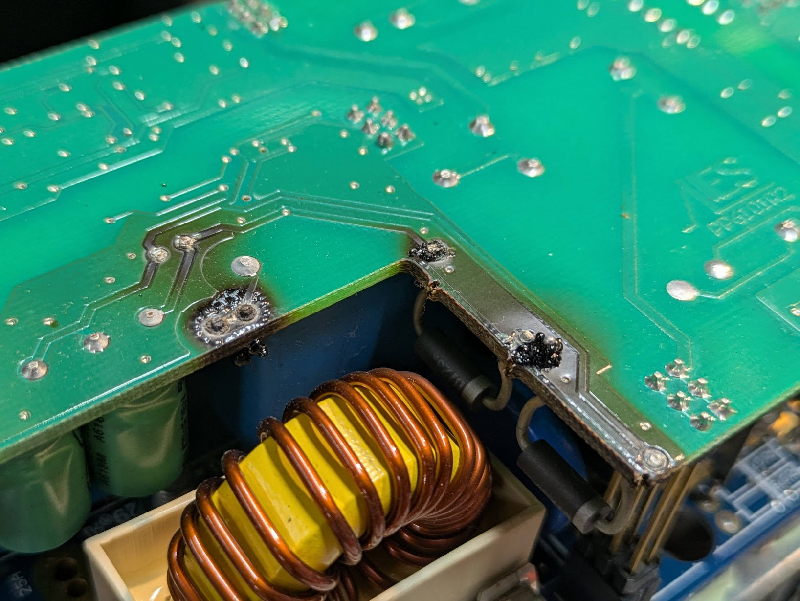
It is not possible to safely repair this damage without understanding the purpose of the circuit.
Reverse engineering
To understand the fault and avoid introducing additional hazards by simply swapping parts, I reverse engineered the channel dimmer module.
I removed the bottom PCB from the heat sink and created a schematic. Some components like the toroid and some signal diodes had to be removed to read the values, others could stay in place.
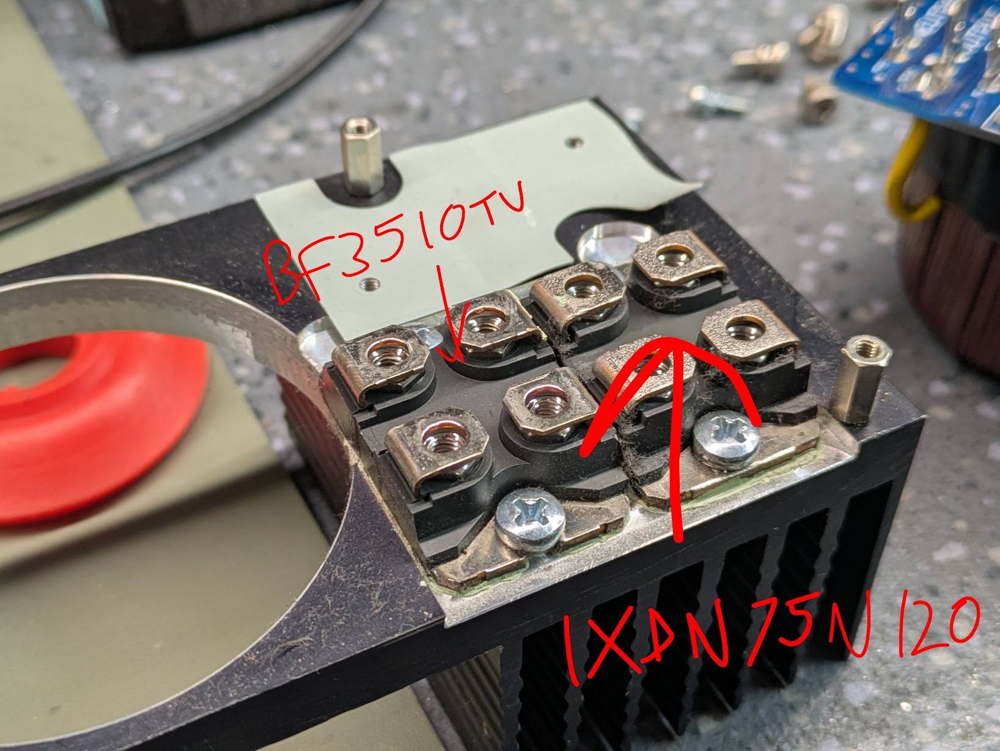
The top logic board is much more complex. I photographed it and removed all resistors and capacitors one-by-one.
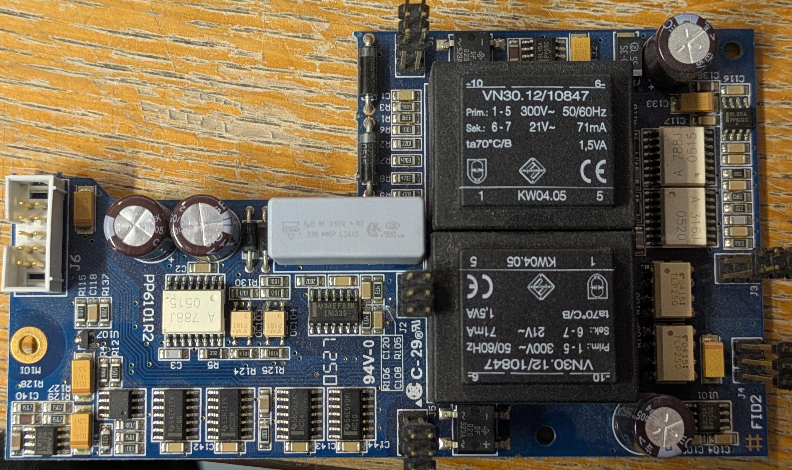
The capacitors had their values measured with an LCR meter and their values were noted on an intermediate paper "map" of the PCB.
Once the board was empty, it could be wet sanded, removing the solder resist, carbonisation damage and exposing the traces more clearly.
This board will not be used again, it is a sacrificial.
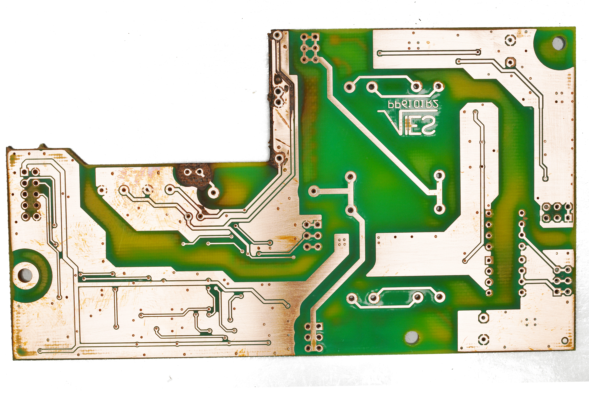
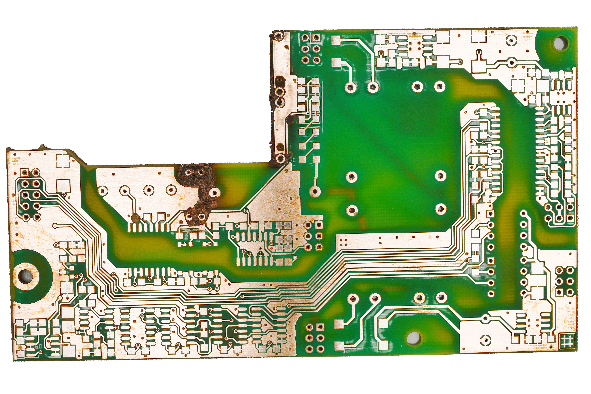
Then, the remainder of the schematic could be drawn.
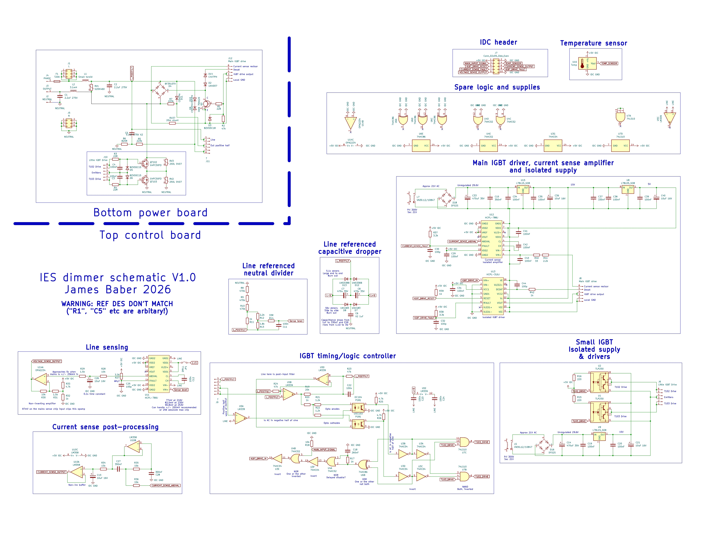
Of course, this drawing is provided as-is with no level of accuracy guaranteed or implied. I created it explicitly to aid me and am only sharing it for your entertainment.
The reference designators in this version do not match those on the IES modules.
Principle of operation
Put as simply as possible, this circuit chops up the mains sine wave with PWM at a high frequency, and passes it through a toridal choke to filter out the PWM noise.
The most interesting part of the schematic is in the middle. Our mystery capacitor is shown to form part of a capacitive power supply. It generates +5 V & -5 V referenced to mains line voltage.
This Vishay document says "In many appliances, a low voltage supply is needed for simple low energy consuming functions like sensing and phase detection.
To reduce the voltage, reactive impedances like film capacitors are used." Bingo.
This supply is used by the HCPL-788J isolation amplifier to measure the voltage of the neutral from the perspective of line.
This explains why the controller reports a short circuit.
The dimmer sees 0 V due to the sense failure so assumes a dead short on the output.
There is a jumper shown on the supply to HCPL-788J which represents how some channel modules have had this trace drilled out in the past.
I can't see why this was done. If the sensing was not needed, just change the firmware behaviour. If the power supply was known to be faulty, drilling this trace does not reduce the hazard that the power supply failures are.
The only fuse protecting the capacitive dropper circuit is the supply T20A channel module fuse.
I have simulated this circuit element in falstad.
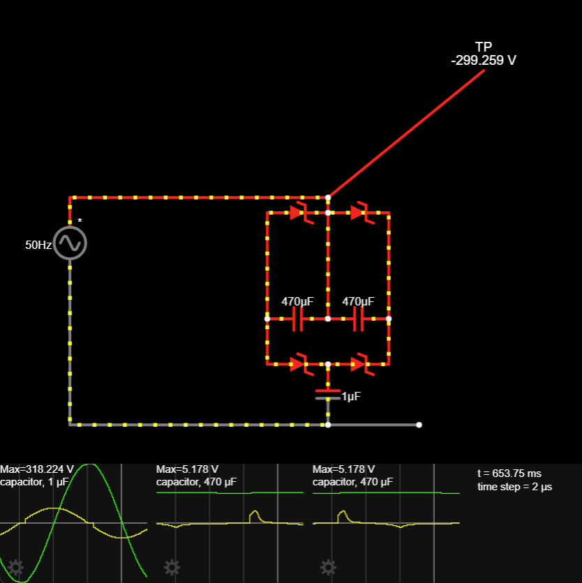
Failed capacitors have often dropped from 1 uF to 330nF and the ESR has risen from 1 Ω to 3 Ω. If you substitute these values into the simulation, it does not put any additional stress on the diodes.
So why are the diodes burning out in some cases too?
Inappropriate capacitors and the mysterious ticking noise
The original capacitors are B32923 X2 MKP/SH by TDK. They have 22.5mm pin spacing.
1uF value order code is B32923C3105+*** which they call a C type. C is not approved for series-with-mains capacitive dropper applications, only parallel EMI filtering applications.
These capacitors are formed of a mono construction with one electrode plate for each terminal.
The alternative is a series/stacked construction which is formed of two series capacitors and these are far more tolerant of surges.
Surges? Come to think of it, I haven't found any relays in here.
The ticking noise is instead caused by The AC mains arcing within the X2 capacitors, creating a current surge which causes excess power dissipation in the diodes.
While the capacitance and resistance of the failed capacitors is poor, the real story is in the insulation resistance.
Testing a sample of 10 removed capacitors showed about half of them audibly crackled and showed low resistance on the meter.
Don't ignore the ticking noise as the longer it goes on, the worse the damage will be.
Presumably, every tick is the self-healing X2 capacitors arcing through.
Finally, a solution
Vishay recommend their F1772 Series for "series with mains" applications because of the internal series construction.
They make F17725102260 which I have not tested. They're 15.5 x 26.5 x 26.5 mm which is wider and taller than the originals so probably won't fit.
This is typical of series construction capacitors as they are inherently larger.
Instead I have fitted MKP339 1uF 310V X2. They are close to what was originally fitted and this may have been what ETC support have been fitting.
In cases without significant burning (50% of cases) where the cap can be changed, write the date on it to help out the next guy.
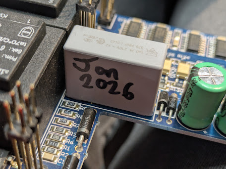
You can usually tell if a channel is a quick fix before removing it. The burnt PCB is visible through the carrier module.
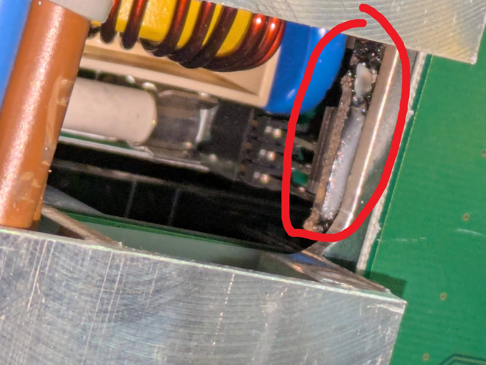
Now put it all back together, clear the faults and test.
But that's not all
The 1 A fuse on the small rear module PCB can sometimes blow. It just supplies the local transformers which don't appear to be failing.
When this fuse has blown, none of the module LEDs will illuminate. Replacing the fuse is sufficient and it doesn't usually blow again.
The fuse holders on the channel modules can become loose and not grip the fuse properly. This overheats the PCB, in some cases quite spectacularly.
As mentioned before, the phase, neutral and output crimps can get loose. Squeeze them all but if they're charred, replace them. Squeezing those will crack the brittle plastic leaving you with no insulation.
Voltage stability
Why splash out on sine wave dimmers instead of just using Zero 88 Betapacks? Stop-motion flicker.
In the UK, mains voltage is allowed to vary by +10% & -6%. The allowable range is therefore 216.2 V to 253 V. This has a significant effect on luminous intensity, colour temperature and lamp life.
Sine wave dimming solves this easily: just reconstruct a sine wave with a constant amplitude, slightly below mains supply voltage.
From the Matrix MKII specification: "Sinewave dimmers shall include voltage regulation to limit the output voltage variation to 1V for every 10V supply voltage change (except for dimmers set to full)."
However, we've partly moved on to ETC Sensor3 now that ETC have discontinued Matrix.
Although sine wave dimming is available for Sensor3, we don't need it. We can get away with the cheaper ED15AFN and ED25AFN leading edge phase-cut SCR modules and still achieve voltage regulation!
The key is in the sensing ("AF" in the part number). These advanced features dimmers support output voltage and current feedback to the controller.
Courtesy of ETC's system specification document, this is the list of "status reporting functions":
Load dropped below recorded value
Load increased over recorded value
DC on dimmer output
SCR failed on/off
Circuit breaker tripped
Dimmer error
Dimmer module removed
Dimmer load absent
While the SCR dimmers can only adjust the phase angle at which the output is enabled, what this sensing achieves is that the dimmer operates as a closed loop, monitoring the true RMS output voltage and ensuring the equivalent heating power is consistent asuming sufficient supply voltage headroom.